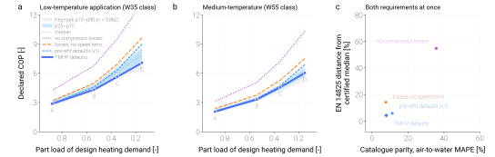

Where the defaults come from¶
TMHP decides a lot on your behalf. Hand it a capacity and a refrigerant and it produces heat-exchanger conductances, a compressor displacement, a rated air flow and the efficiency model of a compressor. That convenience is the point of the library — but it is only worth having if each of those numbers can be traced to a published document rather than to somebody’s judgement, and if you can rerun the step that produced it.
This page is that trace. Every row links to the source and to the script that reads it.
The one rule behind all of it
Published literature reports the conductance, displacement or efficiency of particular machines. Nobody publishes a rule expressed per unit of capacity — which is exactly what a model that sizes its own components needs. So the numbers below are not taken from a paper. They are derived from populations: manufacturer catalogues that rate an entire product range at one declared condition, which makes models of different capacity comparable by construction. The citations are for the method, the rating standard and the correlation; the numbers are measured across many machines.
A consequence worth stating plainly: validating against a catalogue is never calibrating against it. No parameter below is fitted to any unit in the validation set. The heat-pump catalogue that entered the choice of the compressor maps’ axes did not separate the candidates, so the choice was made on the measured compressor (The comparison that chose the axes).
Summary¶
Quantity |
Default |
Where it comes from |
Reproduce |
|---|---|---|---|
Outdoor coil conductance (per role) |
Leaving-end approach 2.73 K as a condenser ( |
Saturation temperature at the printed pressure of 120 / 87 operating points (11 / 8 product lines, 4 / 2 manufacturers) of split and air-to-water outdoor units; the law chosen by product-line hold-out |
|
Indoor coil conductance (air-to-air) |
|
The earlier rule, no longer tied to the outdoor coil. The wall-mounted indoor-coil rows come from one manufacturer and disagree on the leaving approach, so no value is issued (Heat-exchanger conductance) |
|
Indoor coil conductance (water-to-air) |
Leaving-end approach 2.79 K at the rated indoor airflow
( |
113 operating points of water-to-air units (5 product lines, 2 manufacturers) |
|
Liquid–refrigerant exchanger conductance |
Leaving-end approach 4.06 K as a condenser and 3.47 K as an evaporator
at the rated loop flow ( |
117 / 118 operating points of the coaxial source exchangers of water-to-air units (5 product lines, 2 manufacturers) |
|
Plate condenser of the boilers ( |
Leaving-end approach 2.01 K with circulating water at
|
20 operating points of the plate condensers of air-to-water units (3 product lines, 2 manufacturers) |
|
Compressor displacement |
|
41 catalogue rows of inverter twin-rotary compressors (LG, Mitsubishi
Electric SCI; 14 families), pooled by dividing out |
|
Compressor efficiencies (volumetric, isentropic, electro-mechanical) |
Three maps of one compressor, version |
134 measured points of a 46 cm³/rev R290 scroll at 30 to 110 rev/s (Ossorio’s PhD thesis, Appendix 1; Compressor A of Ossorio & Navarro-Peris, 2023), power of compressor and inverter together. 10-fold cross-validated RMSE 0.0081 (\(\eta_v\)), 0.0221 (\(\eta_{ov}\)) and 0.0149 (\(f_{loss}\)) (Compressor efficiency) |
|
Efficiency guards |
|
Above one is set to one, nonpositive is infeasible. Outside the data
domain nothing is held or clamped: the maps are followed as they
are, and the result row carries |
|
Compressor speed range |
|
The ceiling is the upper end of the speed range manufacturers specify for inverter rotary compressors of heat-pump size (100 to 130 rev/s); a machine rated above 80 rev/s keeps 1.5 times its rated speed. Both the floor and the ceiling lie outside the efficiency data, 30 to 110 rev/s (Limits) |
|
Pressure-ratio limit |
|
Operating points above it are rejected. 11 is the hardware limit of a single-stage scroll (self-unloading), kept as the bound for every compressor; a default split unit delivering its nameplate heating from −15 °C outdoor air reaches 6.1 to 6.9. Higher ratios are two-stage or injection machines; the discharge-temperature limit (R32 150 °C, other refrigerants 135 °C, held first by suction control) binds before it almost everywhere |
|
Rated outdoor air flow |
Air-to-air: |
Largest printed fan step of 128 single-split outdoor units (31 families, four manufacturers) and of 59 air-to-water outdoor units (13 families, 6 manufacturers; the widest scatter of the airflow laws, see Maximum fan airflow) |
|
Rated indoor air flow |
Wall-mounted split: |
Largest printed fan step of 130 wall-mounted units (38 families, five manufacturers) and 52 water-to-air units (7 families, four manufacturers). The validation units publish their own indoor airflow and are run at it, so the indoor default does not enter the parity results |
|
Every Reproduce entry is a module under validation/extraction/,
validation/compressor_maps/ or validation/default_inputs/:
uv run python -m validation.extraction.<name>
uv run python -m validation.compressor_maps.<name>
uv run python -m validation.default_inputs.<name>.build
The shipped compressor maps are version ossorio-r290-te-2026-11-21
(tmhp.compressor_efficiency.COEFFICIENT_VERSION).
validation/coefficients/ossorio-r290-te-2026-11-21/ holds the measured
points as extracted, the efficiencies computed from them, the fitted
coefficients with their scores, the comparison that chose the axes and a
README; validation/compressor_maps/ossorio_te/ is the pipeline. Three
steps regenerate the archive, the constants of the library module and the
figures:
uv run python -m validation.compressor_maps.ossorio_te.fit
uv run python -m validation.compressor_maps.ossorio_te.emit
uv run python -m validation.compressor_maps.ossorio_te.figures
Every input they read is committed. The maps of the earlier releases are no
longer in the library; they are kept as records under
validation/coefficients/ (Where the earlier maps went).
The Compressor efficiency section below describes what ships.
Heat-exchanger conductance¶
The problem¶
Every model generates its heat-exchanger conductances from a single declared capacity, so what has to be established is a capacity-normalised rule for each exchanger — not any particular machine’s conductance. Real machines do not publish a conductance either. What their service manuals, installation manuals and test reports print at a rated point is the refrigerant pressure at a service or compressor port, next to the entering air or water temperature, the flow and the capacity. That is evidence at the level of the heat exchanger, and it is what the cycle needs: the conductance is only the means by which the model arrives at the saturation temperature the compressor works against.
What the conductance means¶
Every refrigerant-side exchanger in TMHP is an isothermal refrigerant against
a single-phase fluid, ε = 1 − exp(−UA/C) and Q = ε C |T_in − T_sat|.
There is no refrigerant pressure drop and no desuperheating or subcooling
zone, so the model’s saturation temperature has to be the one at the
compressor’s ports for the pressure ratio to be right. A default conductance is
therefore defined as the effective conductance that reproduces, at the
rated point, the saturation temperature at the pressure the machine prints.
Line and coil pressure drop and the single-phase zones are inside it; it is not
the U·A one would compute from the coil geometry.
Which approach temperature transfers¶
For one operating point, the inlet temperature difference
ITD = |T_in − T_sat|, the leaving-end approach ITD − Q/C, the LMTD and
UA/Q convert into each other exactly. The choice only matters when a value
measured on one machine is carried to another of a different capacity and flow:
what is held fixed? That is a question the data can answer. Per exchanger and
refrigerant role, each candidate law is fitted with one product line held out
(product lines that share hardware count as one) and scored by how well it
predicts the saturation temperature of the held-out units at their own flow and
duty. The rule, fixed before the data were collected: the simplest law within
10 % of the lowest error ships, if the stratum has at least three product lines
and two manufacturers.
Exchanger and role |
Fixed leaving approach |
|
Fixed |
|---|---|---|---|
Outdoor coil, condensing |
1.63 K |
1.96 K |
3.13 K |
Outdoor coil, evaporating |
1.37 K |
1.49 K |
1.84 K |
Plate condenser of air-to-water units |
1.17 K |
1.53 K |
2.22 K |
Coaxial source exchanger, evaporating |
1.58 K |
1.61 K |
1.99 K |
Coaxial source exchanger, condensing |
2.87 K |
3.14 K |
4.73 K |
Water-to-air indoor coil, condensing |
2.72 K |
2.83 K |
3.73 K |
The leaving-end approach wins or ties in every stratum a model uses, and a fixed inlet difference — the obvious convention — is the worst everywhere. The reason shows in the data: manufacturers build several capacities on one chassis, and on a shared coil the inlet difference grows with the load while the leaving approach stays put. Holding it fixed gives the conductance in closed form,
with C the fluid’s heat capacity rate at the reference flow and Q̇ the
exchanger’s own duty. A solution exists for every positive duty and flow. A
fixed inlet difference has none once Q̇ ≥ C · ITD — a reference flow 15 %
below the one assumed can be enough — and conductance per unit capacity
ignores the flow altogether.
The duty is the exchanger’s, not the nameplate: as a condenser the outdoor coil
of a split unit rejects 1.24 W per watt of cooling nameplate (the nameplate
plus the compressor work), and as an evaporator absorbs 0.76 W per watt of
heating nameplate, both archive medians
(tmhp.default_inputs.hx_duty_per_nameplate()). The reference flow is the
rated airflow of the coil (Maximum fan airflow), the rated loop flow, or the
rated circulation flow of a plate condenser.
What the archive says¶
Exchanger and role |
Used for |
Rows / product lines / manufacturers |
Leaving approach, median (p10–p90) |
Inlet difference, median |
|---|---|---|---|---|
Outdoor coil, condensing |
|
120 / 11 / 4 |
2.73 K (0.9–3.9) |
9.4 K |
Outdoor coil, evaporating |
|
87 / 8 / 2 |
2.82 K (2.0–4.5) |
6.8 K |
Plate condenser of air-to-water units |
|
20 / 3 / 2 |
2.01 K (0.7–3.3) |
7.0 K |
Coaxial source exchanger, condensing |
|
117 / 5 / 2 |
4.06 K (1.6–6.5) |
10.2 K |
Coaxial source exchanger, evaporating |
|
118 / 5 / 2 |
3.47 K (1.0–6.6) |
7.7 K |
Water-to-air indoor coil, condensing |
|
113 / 5 / 2 |
2.79 K (1.5–6.6) |
15.9 K |
The 59 sources are manufacturer service and installation manuals (Mitsubishi Electric, ClimateMaster, WaterFurnace, Carrier, Bosch, Toshiba, Gree), the AHRI low-GWP AREP system test reports, an ORNL mini-split test and a KTH air-to-water prototype; the archive’s README lists them with their hosts, the conversions and the anomalies the documents contain. Outdoor coils are pooled across product classes: split and air-to-water outdoor coils are one construction and their leaving approaches agree (as condensers 2.5 K for wall-mounted splits, 2.3 K for ducted splits and 3.7 K for air-to-water units). Indoor coils are not pooled — 6.8 K for wall-mounted units, 2.6 K for ducted ones, 2.8 K for water-to-air units — and each model takes the stratum of its own kind of indoor unit, where one ships.
The same outdoor coil has a smaller effective conductance as an evaporator than
as a condenser (a median ratio of 0.72 over the units printed in both modes),
so each role takes the law of its own stratum: AirSourceHeatPump has
UA_ou_rated for cooling and UA_ou_evap_rated for heating, and
GroundSourceHeatPump UA_ground_rated and UA_ground_evap_rated. A
conductance you pass for the first and not the second serves both roles; a
value you give is never split.
These values were not chosen by catalogue COP: the laws and their constants come from the archive and the hold-out rule alone, and the catalogue comparison of Validation was run only after they were fixed. With them the comparison still under-predicts, so the conductance is not where the remaining bias sits.
Every default conductance is recorded in
model.default_input_estimates["UA_…"] with its law, the spread of the
population, the hold-out error, the sources and whether the duty lies outside
the archive’s range (extrapolated). A conductance you pass is used as given
and has no entry there.
What it means for a default machine¶
Conductance |
Previous rule |
3.5 kW |
8 kW |
15 kW |
|---|---|---|---|---|
|
|
700 → 801 |
1600 → 1677 |
3000 → 3025 |
|
|
700 → 639 |
1600 → 1360 |
3000 → 2470 |
|
|
560 → 560 |
1280 → 1280 |
2400 → 2400 |
|
|
490 → 586 |
1120 → 1214 |
2100 → 2173 |
|
|
700 → 875 |
1600 → 1999 |
3000 → 3749 |
|
|
630 → 682 |
1440 → 1559 |
2700 → 2923 |
|
|
630 → 575 |
1440 → 1314 |
2700 → 2464 |
|
|
280 → 544 |
640 → 1082 |
1200 → 1900 |
|
|
630 → 549 |
1440 → 1255 |
2700 → 2354 |
For the outdoor coil as a condenser the new evidence lands almost exactly on
the previous rule, which was derived from different data by a different route
(The previous rule). The larger changes are elsewhere: an outdoor coil as an
evaporator now has about four fifths of its condensing value; the
indoor coil of the ground-source model has 1.6 to 1.9 times the conductance; and
the boilers’ sink is a different structure, so its UA_tank_hx is not
comparable with the earlier one by itself — what the cycle sees is K_tank_hx
(next section), which is below the earlier Q/5. Small machines get more
outdoor conductance per watt than large ones because their rated airflow per
watt is larger (the airflow laws have an intercept).
How wide the band is, and what that costs you
The leaving approach of a stratum is a median. Between the 10th and 90th percentile of the product lines it spans 0.9–3.9 K for outdoor coils as condensers, 2.0–4.5 K as evaporators, 0.7–3.3 K for plate condensers, 1.0–6.6 K and 1.6–6.5 K for coaxial source exchangers as evaporators and condensers, and 1.5–6.6 K for water-to-air indoor coils. That width is real hardware, not measurement noise: at the same duty and flow, two machines at either end of the outdoor condensing band condense about 3 K apart. Even the best law misses the saturation temperature of a held-out product line by 1.2 to 2.9 K (RMSE).
So a single vendor-neutral default describes a typical machine, and will
under-predict a high-efficiency product line and over-predict a
lower-efficiency one. If you know the machine, pass its conductances
(UA_ou_rated, UA_ou_evap_rated, UA_iu_rated,
UA_tank_hx …). Validation backs the conductance out of each
validation unit’s own rating point, and decomposes the rest of the
residual, which is not all conductance.
Note
Quote the band on the same basis as the rule. The archive’s spread is
a spread of leaving approach; its spread in UA per watt also
carries the spread of airflow per watt, and is wider.
Where this does not apply
Wall-mounted indoor coils. No value is shipped. Every row that gives duty, airflow and pressure at one point comes from one manufacturer (Mitsubishi Electric, six product lines), and the evidence disagrees on the quantity the law uses: 6.8 K of leaving approach on the declared duty and airflow, about 3.6 K on the discharge-air temperature the same tables print, about 3.3 K from a second manufacturer’s pipe temperatures at an assumed rated load. The inlet difference agrees at 22 K. So
AirSourceHeatPumpkeepsUA_iu_rated = 0.16 × hp_capacity, no longer tied to the outdoor coil, and records it as provisional with that reason.Frosted operation. Frosting rows are excluded; frost and defrost are handled by the defrost adjustment, not by the conductance.
Microchannel coils. The archive has none; the strata are fin-and-tube coils.
Wet cooling coils. Indoor coils run wet in cooling and TMHP’s coils are dry, so those rows are excluded. The indoor values come from the dry condensing role and are used in both modes.
Immersed or wrapped tank coils. No measured row pairs a condensing pressure with a tank temperature, so no value is issued. Build the boiler with
m_dot_w_rated=0and passUA_tank_hx.Water-to-water machines. The archive’s water-to-water rows come from one manufacturer whose heating tables print suction pressures below their own low-pressure cut-out; the liquid-source boilers borrow the water-to-air coaxial evaporator.
The boilers’ sink¶
The tank heat exchanger of AirSourceHeatPumpBoiler,
GroundSourceHeatPumpBoiler and WaterSourceHeatPumpBoiler is an
external plate condenser fed with tank water by a circulation pump, the
structure of monobloc air-to-water units. T_tank_w is the water entering
the condenser. The rated circulation flow is
m_dot_w_rated = hp_capacity / (c_w · dT_w_rated) with dT_w_rated
5 K (the EN 14511 30/35 °C rating), and the heat the exchanger carries per
kelvin of condensing temperature above the entering water is
K_tank_hx = C_w (1 − exp(−UA_tank_hx / C_w)). AirSourceHeatPumpBoiler
takes a per-call m_dot_w; the liquid-source boilers run at
m_dot_w_rated. m_dot_w_rated=0 selects the earlier form without
circulating water, UA_tank_hx working against the tank temperature
directly; with UA_tank_hx = hp_capacity / 5 it is the earlier machine.
A rating condition names the leaving water (W35, W55). The catalogue
comparisons and operating_range() hand a boiler the water EN 14511 enters
with — the leaving water less the standard’s rise, 5 K up to 45 °C, 8 K at
55 °C, 10 K at 65 °C — and, for AirSourceHeatPumpBoiler, the flow that
carries the duty at that rise (tmhp.standard_conditions.en14511_water_rise(),
tmhp.standard_conditions.en14511_condenser_water()). This replaces the
earlier convention of a tank 2.5 K below the leaving water with no flow.
The previous rule¶
Until November 2026 the outdoor coil of AirSourceHeatPump had
UA_ou = hp_capacity / 5 in both roles and its indoor coil 0.8 × UA_ou;
the boilers had UA_tank_hx = hp_capacity / 5 without circulating water,
the air-source boiler’s outdoor coil 0.7 × UA_tank_hx, and the
ground-source models 0.18 × hp_capacity on the source side and
0.08 × hp_capacity for the indoor coil. hp_capacity / 5 came from
1,414 component coils in catalogues rated under EN 328 (352 evaporators,
median UA/Q 0.190) and ENV 327 (1,062 condensers, 0.146), converted to the
nameplate basis with 1 + 1/EER and corroborated by twelve Trane packaged
units’ published coil geometry through the Wang, Chi & Chang (2000) air-side
correlation. The scripts under validation/extraction/
(ua_transfer_law, en328_inversion, trane_geometry,
dt_convention) still reproduce it.
It was replaced for two reasons. The rating standards fix the temperature
difference at which a component coil is rated, so the populations say how much
conductance a coil has at that difference, not which approach a heat pump runs
at; and residential mini-splits, the product class of the air-to-air validation
units, were outside that evidence. For outdoor coils the new evidence lands on
almost the same value. An earlier version of that work also reported a pooled
regression of UA/Q against air flow (slope −0.020, R² 0.001) as evidence
that the two are unrelated; inside one rating standard they are linked by an
identity, so the regression meant nothing and was withdrawn, leaving the
overlap of the two standards’ bands and the geometric route as the evidence.
Compressor displacement¶
The machine has to move enough refrigerant to carry the nameplate duty at the nameplate condition:
Both \(\Delta h\) and \(\rho_1\) come from CoolProp at a declared rating point, so the dependence on the working fluid is pure fluid property rather than a tabulated coefficient. That dependence is not small: per kilowatt of nameplate the displacement runs from about 3.0 cm³/rev for R32 to 7.3 for R134a.
What is left, \(\eta_{\mathrm{vol}}\, n\), belongs to the compressor, and compressor catalogues print it. Each row gives a displacement and a capacity at a declared rating point, so \(\eta_{\mathrm{vol}}\, n = \dot Q / (V \rho_1 \Delta h)\) row by row. Across 41 rows of inverter twin-rotary compressors from two manufacturers (LG and Mitsubishi Electric SCI; 14 families, R32 and R410A, 2.9 to 14.9 kW) it is 53.2 rev/s — 0.887 of the 60 rev/s the rows are published at. Predicting a family, a manufacturer or a refrigerant from the others misses the printed displacement by 2.7, 2.6 and 3.8 %.
The default displacement is that relation at the catalogues’ own rating point
(evaporating 7.2 °C, condensing 54.4 °C, suction 18.3 °C, liquid 46.1 °C), with
the nameplate capacity standing in for the compressor’s catalogue capacity
(tmhp.default_inputs.estimate_displacement()). Every model —
AirSourceHeatPump, GroundSourceHeatPump, AirSourceHeatPumpBoiler,
GroundSourceHeatPumpBoiler and WaterSourceHeatPumpBoiler — uses it when
V_cmp_ref is left out, and says so: model.default_input_estimates["V_cmp_ref"]
holds the value, the data release, the capacity range of the catalogue rows,
whether the capacity lies outside that range (extrapolated) and the source
documents. A V_cmp_ref you pass is used as given and has no entry there.
Nameplate |
Until November 2026 (any refrigerant) |
R32 |
R410A |
R290 |
R134a |
|---|---|---|---|---|---|
3.5 kW |
16.33 |
10.55 |
11.64 |
19.68 |
25.60 |
8 kW |
37.33 |
24.10 |
26.61 |
44.98 |
58.51 |
15 kW |
70.00 |
45.20 |
49.90 |
84.34 |
109.70 |
The earlier default, 42 cm³/rev per 9 kW for every refrigerant, was 55 % above
the catalogue value for R32 and 17 % and 36 % below it for R290 and R134a. The
speed solver absorbed the difference into the rated speed — the speed at which
the machine delivers its nameplate at its rating condition. The constant is
no longer in the library. GroundSourceHeatPumpBoiler and
WaterSourceHeatPumpBoiler were the last two models on it and take the
catalogue displacement since November 2026 like the others.
Machine |
Earlier constant |
Catalogue displacement |
|---|---|---|
|
30.6 |
46.5 |
|
69.0 |
57.8 |
|
25.0 |
38.1 |
|
79.6 |
66.7 |
|
109.4 |
71.8 |
|
60.6 |
50.7 |
Both columns are the present library; only the displacement differs. For the two liquid-source boilers the change is the one of November 2026: the default 8 kW R290 ground-source boiler goes from a rated speed of 79.6 to 66.7 rev/s and the water-source boiler from 60.6 to 50.7, and an R134a ground-source boiler from 109.4 to 71.8. With the catalogue displacement every machine of the table is rated inside the speed range of the efficiency data, 30 to 110 rev/s (Compressor efficiency); with the constant one was below it.
One limit remains, and it belongs to the rule. A ground-source boiler is still
rated high — at 8 kW, 63.1 rev/s with R32, 65.5 with R410A, 66.7 with R290 and
71.8 with R134a, above the 60 rev/s the catalogue rows are published at —
because its nameplate condition, B0/W55, is harsher than the catalogue rating
point (7.2 / 54.4 °C) at which the rule reads the nameplate: a compressor
sized to deliver the nameplate there has to turn faster to deliver it from
brine at 0 °C. Its speed ceiling, 120 rev/s, lies above the 110 rev/s the
efficiency data reach, as that of every default machine does. If you
know the compressor of such a machine, pass V_cmp_ref and rps_max.
The class rating points¶
tmhp.compressor_speed.refrigerant_aware_displacement() evaluates the same
relation at any declared rating point and rated speed. Two are declared per
equipment class — EN 14511 A7/W35 for air-to-water, ISO 5151 T1 for
air-to-air — and their rated speed is the one quantity that carries real
uncertainty, since the result is exactly inversely proportional to it. They are
not what the default uses; they are the record of how the rated speed of each
class was bounded before compressor catalogues were collected.
For air-to-water it is not a guess. Inverting the relation against the nine Panasonic Aquarea units whose compressor displacement is published by the manufacturer’s compressor division gives a median rated speed of 42 rev/s, and
Nameplate |
R32 |
R290 |
R410A |
|---|---|---|---|
9 kW |
33.6 rev/s |
32.8 |
36.2 |
12 kW |
44.9 |
43.7 |
48.3 |
— at a fixed capacity the three refrigerants agree within 5 %. The physics carries the fluid dependence on its own. The scatter that remains is the manufacturers’ practice of sharing one compressor across adjacent capacity steps: in all three of those product lines the 9 and 12 kW units use the same machine, which no continuous rule can reproduce.
For air-to-air the evidence is thinner. Daikin’s SL-series service manual
publishes rated compressor frequency in place of displacement — 52 rev/s
cooling for the 2.5 kW class, 72 for the 3.5 kW class — and no displacement is
published anywhere to check the result against. A search of five data books,
three service manuals and two specification sheets, about 90 MB, returned no
displacement for any Daikin, Fujitsu or Trane unit; every cm³ in those
documents is an oil charge. This is the weakest link in the chain and is
treated as such.
Tip
A displacement error is second order for steady-state COP: the speed solver
absorbs it into speed, and the result moves only through the speed
dependence of the efficiencies. Where it matters is the modulation envelope
— displacement and rps_min jointly fix the lowest duty the machine can
deliver. If you know your machine’s displacement, pass V_cmp_ref.
Maximum fan airflow¶
A fan default has to say which airflow it is. Catalogues print several fan
steps, and the one the model needs is the largest: the rated airflow is where
the fan stops (dV_*_fan_a_max defaults to it), where the coil conductance
is stated and where the fan power is anchored. So the default is the largest
fan step a product publishes, fitted against the capacity of the same duty —
cooling airflow against cooling capacity, heating against heating — with one
law per product class. Families are weighted equally, and of a proportional, a
linear and a power law the simplest within 2 % of the best family-hold-out
error is kept (tmhp.default_inputs.estimate_max_airflow(); Q is the
capacity in kW, the result m³/s).
Input left out |
Law [m³/s] |
Rows / families / manufacturers |
Capacity [kW] |
Family hold-out MAPE |
|---|---|---|---|---|
|
|
128 / 31 / 4 |
1.5–13.6 |
14.5 % |
|
|
125 / 30 / 4 |
2.0–16.0 |
16.4 % |
|
|
130 / 38 / 5 |
1.5–9.7 |
12.9 % |
|
|
131 / 37 / 5 |
2.0–11.2 |
12.4 % |
|
|
26 / 7 / 3 |
2.4–13.6 |
12.8 % |
|
|
26 / 7 / 3 |
3.2–16.0 |
10.9 % |
|
|
52 / 7 / 4 |
4.7–21.6 |
9.6 % |
|
|
52 / 7 / 4 |
3.4–16.9 |
8.2 % |
|
|
59 / 13 / 6 |
3.0–16.0 |
20.2 % |
The duty is the one the nameplate names: the mode of the rating condition
(cooling unless rated_condition={"mode": "heating"} is given).
indoor_unit_type="floor_standing" selects that class for
AirSourceHeatPump; cassette and ducted units have no stratum and need
their own dV_iu_fan_a_rated. A capacity outside the catalogue rows still
gets a value, flagged extrapolated in
model.default_input_estimates["dV_iu_fan_a_rated"] (and
["dV_ou_fan_a_rated"]) — the default 4 kW GroundSourceHeatPump is such
a case, below the smallest water-to-air row.
Input |
3.5 kW |
8 kW |
15 kW |
|---|---|---|---|
|
0.700 → 0.557 |
1.600 → 1.045 |
3.000 → 1.804 |
|
0.188 → 0.216 |
0.430 → 0.360 |
0.805 → 0.584 |
|
0.188 → 0.302 |
0.430 → 0.523 |
0.805 → 0.867 |
|
0.525 → 0.523 |
1.200 → 0.912 |
2.250 → 1.517 |
Until November 2026 the outdoor airflow was 0.0002 m³/s per watt
(720 m³/h per kW) for air-to-air and 0.00015 m³/s per watt (540 m³/h per
kW) for air-to-water, and both indoor airflows 5.37e-5 m³/s per watt
(400 cfm per ton, the airflow unitary equipment is rated at, not its
largest). Against the catalogue maxima the air-to-air outdoor figure was 1.26
to 1.66 times too large, the air-to-water one 1.00 to 1.48 times, and the
water-to-air indoor figure 0.62 to 0.93 of it.
Where the catalogue airflow meets the dry-coil model
The indoor laws give 150 to 160 m³/h per kW for wall-mounted units of 9 kW and above and for floor-standing units of any size. TMHP’s coils are dry, so the whole nameplate is sensible heat, and at that airflow the room air has to change by about 20 K: the refrigerant then stands 20 to 25 K from the room air at nameplate capacity (a 15 kW unit condenses at 42 °C in a 20 °C room and evaporates at 4.6 °C in a 27 °C one).
That is why the approach-temperature search box of AirSourceHeatPump
(dT_approach_bounds) is 1 to 30 K — the box the catalogue parity runs
have always used. With the earlier upper bound of 20 K the box itself was
the limit at the rating point: a default unit reached its nameplate at
35/27 °C only up to 8 kW (98 % at 9 kW, 89 % at 15 kW; a floor-standing
unit 96 % at any capacity), and in heating at −7 °C outdoors fell short
from 6 kW (86 % at 8 kW). At 30 K every default unit from 1.5 to 50 kW,
of either indoor class and either rated duty, delivers its nameplate at
both rating points. In mild weather the ceiling of the default 4 kW unit
is then 189 % of the nameplate at 7/20 °C, where a coil is still at the
edge of the search, and 166 % at 35/27 °C, where the compressor sets it
(126 % and 124 % at 20 K).
The air-to-water outdoor stratum is the weakest of the airflow laws and says
so. It has 59 rows from 13 families and 6 manufacturers (Daikin, LG,
Mitsubishi Electric, Samsung, Toshiba, Vaillant), and the manufacturers
differ: predicting each from the other five misses by 22.7 % on average,
between −27 % and +25 % by manufacturer, and a family held out by 20.2 % —
both a little over the 20 % the other strata were held to. It ships as the
default by the owner’s decision (2026-11-15), as a central value with that
spread stated: a default is chosen by the evidence for the input, and against
the nine Panasonic units of the validation set — which are not in the stratum
— the law misses the published airflow by 14.1 % (8.0 % low on average) where
the constant missed it by 32.5 %.
model.default_input_estimates["dV_fan_a_rated"] carries the sources, the
hold-out errors and the spread between manufacturers (a unit’s own airflow
can differ from the default by about ±23 %); a published airflow passed as
dV_fan_a_rated replaces it.
Compressor efficiency¶
The default compressor efficiencies are three maps of one compressor, version
ossorio-r290-te-2026-11-21 (tmhp.compressor_efficiency): a
46 cm³/rev R290 scroll, measured at 134 operating points. The same maps serve
every refrigerant and every compressor; the library has no compressor type to
choose (#217). A particular machine is followed by calibrating the maps to its
data (#90), not by a form of its own. This section says what the maps are,
what they were fitted to, how their axes were chosen and where they are weak.
The authority for every statement is the archive,
validation/coefficients/ossorio-r290-te-2026-11-21/, and its README.
Two things to know before the detail
The maps describe one compressor, an R290 scroll. Every default machine is given its efficiencies, whatever the refrigerant and the compressor of the machine (Limits).
Uncalibrated, the defaults run low against the catalogues: a COP bias of −5.9 % for the air-to-water units and −12.1 % for the air-to-air units (Validation).
What is modelled, and where each loss sits¶
The maps are fitted on the power the compressor and its inverter draw together, \(W\). Three quantities are computed from each measured point with CoolProp (propane):
with \(h_2\) from the measured discharge temperature. \(\eta_v\) is
the delivered fraction of the swept volume, \(\eta_{ov}\) the overall
efficiency, and \(f_{loss}\) the share of the electrical input that never
reaches the gas: the losses of the motor and the inverter and the heat the
shell gives off. A model reports three quantities, as it always has:
eta_cmp_vol is \(\eta_v\), eta_cmp is \(1 - f_{loss}\) and
eta_cmp_isen is \(\eta_{ov} / (1 - f_{loss})\), so
eta_cmp_isen · eta_cmp is \(\eta_{ov}\). eta_cmp_isen sets the
discharge enthalpy, and so the heating duty and the discharge temperature;
eta_cmp sets the electrical input E_cmp = ṁ (h_2 − h_1) / eta_cmp,
which is therefore the power at the inverter input. There is no separate
drive model (#217): the inverter loss is the one measured with this
compressor, inside \(f_{loss}\). An efficiency you pass yourself
(eta_cmp_isen=…) is a number or a function of the pressure ratio and the
speed and is used as given.
The maps¶
With \(l = \ln PR\), \(n = N / 70\) (\(N\) in rev/s) and \(t = T_e / 10\) (\(T_e\) the evaporating saturation temperature in °C):
Each map is fitted to the 134 points by least squares. The speed is absolute:
\(n = 1\) is 70 rev/s whatever the rated speed of the machine, and no
quantity is read relative to the rated speed. The coefficients are in the
archive’s coefficients.json, and the constants of the library module are
emitted from it.
Map |
RMSE |
10-fold CV RMSE |
Largest error |
|---|---|---|---|
\(\eta_v\) |
0.0075 |
0.0081 |
0.025 |
\(\eta_{ov}\) |
0.0206 |
0.0221 |
0.075 |
\(f_{loss}\) |
0.0137 |
0.0149 |
0.041 |
Errors are in units of efficiency; the cross-validation leaves out a tenth of the points at a time.
The data¶
ossorio_thesis_r290_134.csv holds 134 measured points of a 46 cm³/rev R290
scroll compressor at 30, 50, 70, 90 and 110 rev/s with a superheat of about
10 K, evaporating at −30.2 to 25.1 °C. They are extracted row by row from
R. Ossorio’s PhD thesis (Universitat Politècnica de València, Appendix 1, PDF
pp. 244–252); the page and the row of each point are in the file. They are
the tests of Compressor A of Ossorio & Navarro-Peris (2023). The thesis tabulates
the power of the compressor and that of compressor and inverter together; the
maps use the second.
The efficiencies computed from the points (points.csv) agree with the
author’s tabulated values to 0.005 for \(\eta_v\) and 0.008 for
\(\eta_{ov}\). The correlations of Ossorio, Marchante-Avellaneda &
Navarro-Peris (2024, Appl. Therm. Eng. 244:122666) were fitted to the same
tests (133 points); the PR–N quadratic of 2026-11-01 (#90) was fitted to those
correlations, not to the measured points. Every input of the fit is
committed.
Why the evaporating temperature¶
The measured efficiencies depend on \(T_e\). At one pressure ratio and
speed the measured \(\eta_{ov}\) and \(\eta_v\) differ with the
evaporating temperature, and without the \(T_e\) term the residual
follows it (figures/te_residuals.png of the archive). With the term the
cross-validated RMSE falls from 0.034 to 0.022 for \(\eta_{ov}\) and from
0.015 to 0.008 for \(\eta_v\).
The correlation behind the earlier quadratic says the same. In the 2024 correlation the specific consumption carries \((P_c + 6.70)/(P_e + 0.51)\), which is not the pressure ratio; at a pressure ratio of 3 and 70 rev/s its \(\eta_{ov}\) rises from 0.60 to 0.70 between \(T_e\) = −10 and 15 °C. The map gives 0.62 and 0.69 there.
\(f_{loss}\) does not need the term: one changes its error by 0.0001.
The comparison that chose the axes¶
Four candidates were compared (#218; comparison/ of the archive): the PR–N
quadratic of 2026-11-01; (a) the PR–N form above without \(T_e\); (b) the
same form with \(T_e\), the one adopted; and (c) a PR–N map on the
terminal basis with the inverter of Ossorio & Navarro-Peris (2023), Eq. 5.
Each was scored against the 134 points and calibrated to the heating
catalogue of the Fujitsu ASYG30LMTA (50 rows) with the protocol of #90: no
calibration, then the level \(\lambda_{ov}\), then \(\lambda_{ov}\)
and a shift of the peak (\(\alpha_r\), \(\alpha_N\)). The calibration
is not in the library; it was run on the branch
feat/compressor-catalogue-fitting at 9f349df1, and the scripts are in
#218.
Candidate |
\(\eta_{ov}\) RMSE, 134 points (10-fold CV) |
Catalogue COP RMSE: none / \(\lambda_{ov}\) / \(\lambda_{ov}\) + shift |
|---|---|---|
PR–N quadratic of 2026-11-01 |
0.290 (inside its grid 0.046) |
1.228 / 0.979 / 0.695 |
|
0.033 (0.034) |
1.176 / 0.842 / 0.723 |
|
0.021 (0.022) |
1.142 / 0.812 / 0.696 |
|
0.032 (0.032) |
1.164 / 0.833 / 0.735 |
The catalogue does not separate the candidates. All four end within 0.04 of each other, with the same residual pattern over the outdoor temperature. The axes were therefore chosen on the measured compressor, where (b) has the smallest error (#218).
The calibration also lifts \(\lambda_{ov}\) to 1.3–1.7, which puts the isentropic efficiency above one at 15 or 16 of the 50 rows. An inference, not a result of the comparison: a level that high is not a property of a compressor, so the calibration takes up gaps that are not the compressor’s (conductances, fans, frost and defrost, the power boundary of the catalogue).
Limits¶
One R290 scroll for every machine. The maps are one compressor’s, and they are applied unchanged to every refrigerant, every compressor and every capacity: to the rotary and swing compressors of most of the validation set and to R32, R410A and R134a as much as to R290. The refrigerant enters through the fluid properties, not through the efficiency. Nothing in the archive says how far another compressor sits from this one. Injection compressors are not modelled.
Uncalibrated, the defaults run low. Applied unchanged, the shipped defaults give a COP bias of −5.9 % for the ten air-to-water units and −12.1 % for the five air-to-air units, cooling and heating alike (Validation). How much of it is the compressor was not separated.
Over-compression at a low pressure ratio. A scroll has a built-in volume ratio and over-compresses below it, so the maps fall steeply at a low pressure ratio: at 70 rev/s and \(T_e\) = 10 °C, \(\eta_{ov}\) is 0.46 at a pressure ratio of 1.5 against 0.69 at 4. A rolling-piston rotary has no built-in volume ratio (an inference about other machines: the archive holds no rotary data). It bears on low-lift operation: cooling in mild weather, and low flow temperatures in mild weather.
Outside 30–110 rev/s the maps are extrapolated. The default speed floor is
15 rev/s and the ceiling 120 rev/s or more, so part load below 30 rev/s and
full load in cold weather above 110 rev/s lie outside the data. The speed
terms, a quadratic in \(n\), are followed as they are, and
efficiency_extrapolated is set. At a pressure ratio of 3 and
\(T_e\) = 0 °C the map’s \(\eta_{ov}\) is 0.649 at 70 rev/s, 0.616 at
30 and 0.582 at 15 rev/s, and 0.598 at 110 and 0.572 at 120 rev/s. In a
machine, with frost left out, the default 9 kW R32 air-to-water unit at −7 °C
outdoor air and 45 °C leaving water has a COP of 2.64 at full load, 2.68 at
75 % load and 2.59 at its speed floor (21 % of the nameplate); at +7 °C and
35 °C it has 4.33, 4.47 and 4.63 (30 %).
The volumetric map passes one at a low pressure ratio and a warm evaporator (1.009 at a pressure ratio of 1.5, \(T_e\) = 20 °C and 70 rev/s). The value is then set to one, by the rule of the Summary.
Where the earlier maps went¶
The type-specific semi-empirical models of 2026-11-15
(semi-empirical-2026-11-15: a scroll and two rotary types chosen with
compressor_type, two rotary speed shapes and a separate drive model) are
no longer in the library (#217). Their archive and their pipeline,
validation/coefficients/semi-empirical-2026-11-15/ and
validation/compressor_maps/semi_empirical/, remain as records. The
quadratic map of October 2026 (BITZER-three-C3-absolute-N-2026-10-06),
the correlations before it (v2026-09-24) and the older sets are records
too: validation/coefficients/recorded_maps/ evaluates them number for
number for tests whose scenarios were recorded with them, and
validation/coefficients/README.md lists the folders. BITZER data are no
longer used; the test and validation records that still hold them are to be
removed (#222).
Does the map survive both tests?¶
A compressor description fitted on compressor measurements still has to work inside a heat pump. Whether it does is a question with two halves:
Shape. EN 14825 lowers the required duty and the flow temperature together across four test points, and Heat Pump Keymark publishes what real machines declare at each of them. A description can be checked against the certified population (Part-load behaviour).
Level. A description can sit on the certified median and still miss every individual machine. That is what the catalogue parity set answers (Validation).
Four compressor descriptions were run through both, identically, with the current model code. Neither half was used to fit the maps or to choose their axes.


(a, b) The certified trajectory, low- and medium-temperature application. (c) Both requirements at once.¶
Description |
What it is |
Parity MAPE (air-to-water) |
Bias |
Evaluated points (all catalogues) |
|---|---|---|---|---|
|
all three efficiencies pinned at 1.0 — what ASHP did before this work |
35.7 % |
+35.7 % |
742 |
|
the |
7.7 % |
+4.2 % |
749 |
|
the pre-refit defaults: |
11.3 % |
−10.0 % |
744 |
|
what TMHP ships: the maps |
7.9 % |
−5.9 % |
749 |
Parity figures are the ten adopted air-to-water units; the held Fujitsu
catalogues are excluded from every headline. The defaults row is the
air-to-water row of Validation. Each row puts one description on all ten
units, but the rows are not scored on the same points. A point the model
cannot deliver at the catalogue’s duty is not scored, and which points those
are depends on the description: of the 153 points of the ten units, 145 are
evaluated with the defaults (138, 145 and 140 for the first three rows).
Every row carries the frost and defrost adjustment of the air-source boiler
(Frost and defrost), which lowers each description’s COP by 16 to 19 % at
and below +2 °C outdoor (median over those points); without it the four rows
read 53.3 / 18.4 / 7.1 / 9.6 % with biases of +53.3 / +17.1 / +2.0 / +5.2 %.
Three things to read off it.
The compressor description carries most of the model. An ideal
compressor is 35.7 % out. The shipped maps come to 7.94 % with a −5.86 %
bias. The speed-independent constant set comes to 7.7 % and the
pre-refit legacy-v1 set to 11.3 %, and the order of the three depends on
the frost adjustment as much as on the compressor: without it they read
18.4, 7.1 and 9.6 % (defaults). The case for the present maps is the
compressor-level evidence of the previous subsections; this table neither
adds to it nor takes from it.
The shape passes. Across fifteen combinations of capacity, refrigerant
and sizing ratio the modelled COP rises at every step A → D in all fifteen
runs of each application (96.9 % of the 9,062 certified low-temperature
records and 98.7 % of the 9,044 medium-temperature ones do the same), and the
A-to-D gradient lands inside the certified p10–p90 in all thirty runs: median
2.46 modelled against 2.63 certified for the low-temperature application and
2.92 against 2.86 for the medium-temperature one. Frost lowers point A and so
steepens both; without it the two medians are 2.13 and 2.53. The gradient
criterion is not a sharp one: the constant set, which has no speed
dependence at all, passes it in all thirty runs as well; ideal passes in
20 and legacy-v1 in 15.
The level passes in every run. All thirty runs have all four points
inside the certified p10–p90; legacy-v1 has 20 such runs, constant
and ideal none. Read as percentiles of the certified population, the R32
9 kW low-temperature trajectory (design load two thirds of the nameplate)
sits at the 34 / 21 / 21 / 22nd percentile at points A / B / C / D, and the
medium-temperature one at 36 / 44 / 52 / 43.
The part-load points are the ones the compressor runs slowly at. At A it turns at 40 to 62 rev/s; at B at 17 to 26, below the 30 rev/s where the data of the maps start, in all 30 runs; at C and D at 15, the speed floor. The level at B, C and D therefore rests on the maps followed below their data (Limits).
The count has moved four times in November 2026, and the committed verdicts give each step: 25 of the 30 runs met the criterion in the results of 14 November, 14 once the default inputs came from catalogues (displacement and airflow; 15 November), 9 with the semi-empirical models, the approach-temperature conductances and the plate-condenser sink, and 30 now, with the maps of one R290 scroll. Only the compressor model changed in the last step. Which input moved which point within the earlier steps was not separated. Nothing was adjusted to improve this count.
Certified COP is measured with defrost, and what the model does about frost decides this criterion as much as the compressor does. Without any adjustment the same R32 trajectories sit at 90 / 54 / 21 / 22 and 86 / 74 / 52 / 43, and three of the 15 low-temperature runs are above the 90th percentile at point A; the other 27 runs pass. With the EnergyPlus adjustment applied in full at every load they sit at 30 / 1 / 21 / 22 and 33 / 1 / 52 / 43 — point B below the 10th percentile in all 30 runs, no run passing: that adjustment is a function of outdoor temperature and humidity alone and corrects a unit at half load like one flat out. With the load on the coil taken into account (frost at part load; no constant added) point A keeps over nine tenths of the correction and point B a quarter of it.
Point C of the medium-temperature trajectory
An earlier edition of this page marked point C of the medium-temperature
application as an artefact: the operating-point search starved the
outdoor coil below the compressor speed floor. That search now scores
candidates by electrical input per unit of heat delivered
(tmhp._opt_utils). See Part-load behaviour.
Reproduce both halves with:
uv run python -m validation.en14825_seasonal_trend.air_to_water --jobs 6
uv run python -m scripts.validation.en14825_verdict_figure
or regenerate everything with scripts/regen-validation.sh. The study reads
the certified population from validation/data/keymark_en14825_declared.csv,
which is not committed; validation.extraction.keymark_declared builds it
from the hplib archive listed in validation/registry/sources.yaml. The
study writes en14825_trend_verdict.csv, en14825_trend_points.csv and
coefficient_ablation_parity.csv under validation/data/. The figures
without frost and with the full adjustment, and the parity of each
description without frost, are not committed outputs: they were measured
with the study’s own functions on models built with defrost=False and
DefrostModel(load_weighted=False).
Provenance¶
The source documents are archived locally but not committed: publisher PDFs
and supplementary datasets are not redistributable. The tracked half is
validation/registry/sources.yaml, which records what each document is,
where to obtain it and the SHA-256 of the copy the scripts were run against. A
reader who obtains the same document from the manufacturer and gets the same
checksum is running on identical bytes, and everything under
validation/data/ follows from those bytes by the scripts in
validation/extraction/.
See also
- Validation
Catalogue parity results, unit by unit.
- Part-load behaviour
The part-load trend, and the certified data it is judged against.
- Adding a catalogue
How to add a unit and have all of it update.
Note
The compressor maps described above (Compressor efficiency) are the
shipped ones, version ossorio-r290-te-2026-11-21. Their archive is
validation/coefficients/ossorio-r290-te-2026-11-21/; the three commands
under the Summary regenerate it and the constants of
tmhp.compressor_efficiency. The models of the earlier releases — the
semi-empirical models of 2026-11-15, the quadratic fits of 2026-10-06 and
the correlations of 2026-09-24 — are records under
validation/coefficients/ and are not in the library. The comparison in
Does the map survive both tests? and the results on Validation are for
the shipped defaults.